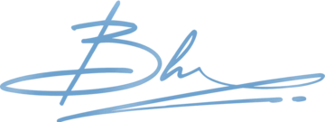
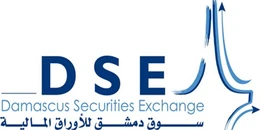
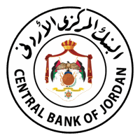
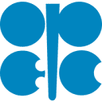
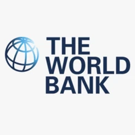
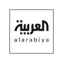
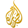
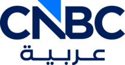

Markets in plain language —every number, in context
An analytical platform tracking the new Syrian lira, gold and regional and global markets as they move — data paired with analysis that explains what sits behind it. No empty headlines.
Insighter+ is an analytical platform for market data. It follows the new Syrian lira, gold, and the region's and the world's markets, and it refuses to hand you a number on its own: every figure arrives with the analysis that explains where it came from, what moved it, and what it means for a household, a shop, or a saver.
We are not a news publisher. News is a relay — fast, loud, and forgotten by evening. Insighter+ is built the other way: fewer items, followed properly; data gathered from documented sources; and original analysis that reads the numbers instead of repeating them. If a story matters, we link you to its source and say what we think the data shows — two different things, kept visibly separate.
Data, documented
Every figure carries its source and its time. Nothing is copied from page to page until it loses its origin.
Meaning attached
A price is published with its cause, its context and its likely effect — the part of the news that usually goes missing.
From here, outward
Coverage starts where our readers live — the lira and local gold — and widens ring by ring: the region, then the world.
+
The Economy, Read Slowly
A short philosophy of markets — why this platform exists, and how it chooses to look at a number.
A market is often described as a machine. It is not. A market is people — a merchant in Latakia deciding what to stock before winter, a family abroad deciding when to send money home, a young saver weighing gold against a currency that has not always kept its promises. Every price on this platform is the sum of thousands of such decisions, most of them made under pressure, all of them human.
That is why a number is never just a number. The dollar at 11,850 new Syrian pounds is also a rent negotiation, a pharmacy bill, a wedding postponed or brought forward. Strip the number of its story and you have not made it more objective — you have made it less true. Insighter+ treats context not as decoration around the data, but as part of the data.
Watching a market tells you where it is.Understanding it tells you where you stand.
There is a difference between watching and understanding. Watching is restless: a screen refreshed twenty times a day, a mood that rises and falls with every flicker. Understanding is slower and quieter. It asks what changed, why it changed, and what would have to happen for it to change back. This platform is built for the second of those — for readers who would rather comprehend a market once than glance at it all day.
And underneath everything sits trust. Numbers are easy to print and hard to earn belief in, so we work to a simple discipline: show the source, mark the estimate as an estimate, and say plainly when something is not known. Trust is not a slogan here; it is the product. The data is only the packaging it arrives in.
+
The Compass
Six directions, six stories. Behind every section stands a small scene — a question, a habit, a way of looking at money. Read the story, then follow the needle through the door into the section itself.
01
Today's Pulse
Every morning, before the shops open, a shopkeeper in Damascus asks one question: where did the dollar wake up today? The Pulse is that question, answered — the day's essential numbers in a single glance, before anything else is decided.
Syria's economy stands on real foundations: fertile land and a long farming tradition, a Mediterranean coastline and ports that link East and West, workshops and industries built over generations, and people known for trade, craft and resilience — at home and across a wide diaspora. Gateway to Syria reads those strengths honestly, alongside the challenges pressing on them: a strained new Syrian pound, tight liquidity, costly energy and the long work of rebuilding production and trust.
Somewhere in the world it is always trading hours. While Damascus sleeps, Bitcoin moves, the yen answers a bond yield, and gold quietly reprices the world's anxiety. The Asset Markets keeps watch on the shift that never ends.
A decision in Riyadh about oil, a listing in Dubai, a gas contract in Doha — within days each one becomes a price in a Syrian shop, carried home inside a remittance or a fuel bill. This page is the mirror Syria's economy cannot help but look into.
An inflation print in Washington can move the price of bread in Latakia — not directly, not quickly, but surely: through the dollar, through oil, through the mood of money itself. Across the World traces those long wires before they arrive.
Anyone can copy a number. The harder craft is asking what made it move, what would move it back, and what it means for the person reading it. Behind the Numbers is where the platform slows down and does that work — one subject at a time.
Six ideas sit behind almost every figure on this platform. Learn them once, and the day's numbers start explaining themselves.
+Inflation
When prices rise across the board, money quietly buys less. Inflation is why a salary that felt comfortable five years ago strains today — and why savers watch the exchange rate and gold before anything else.
+Exchange rates
A currency's price is supply and demand, nothing more mysterious: how much of it people want — for trade, travel, savings or safety — against how much of it exists. Confidence is the invisible half of that equation.
+Central banks
The referee and the printer in one institution: a central bank issues the currency, sets the interest rate every other rate leans on, and publishes the official bulletin this platform reads every morning.
+Gold, the haven
Gold pays no interest and builds nothing, yet in uncertain times the world reaches for it — because it belongs to no government and cannot be printed. Its price is a thermometer for trust.
+Oil
Oil is the region's master price: it fills Gulf treasuries, sets the cost of transport and heating, and reaches a grocer's shelf in Latakia by a longer road than most people guess.
+Remittances
Money sent home by those working abroad is one of the largest flows into Syria — steadier than trade, rising around the holidays, and quietly holding up the parallel market's supply of dollars.
+
Inside the Hub
What is covered, how to use it, and the method behind every page.
What we cover
Syria: the parallel market and the official bulletin — dollar, euro, pound and the region's currencies against the new Syrian pound.
Gold twice over: the local gram in 24, 21 and 18 karat, and the global ounce it answers to.
The region: four Gulf bourses, Brent and WTI crude, and the Gulf currencies pegged to the dollar.
The world of assets: six major cryptocurrencies, the main currency pairs, gold, silver and platinum.
The world of indices: six benchmark stock indices, the economic calendar, and a fear-and-greed gauge for the global mood.
How to use it
1
Start with the PulseOne page, one minute: the state of the lira, gold and the world before you decide anything.
2
Follow your marketYour salary, your savings or your trade — each has its page: Syria, Assets, the Middle East or the World.
3
Then read the analysisBehind the Numbers explains the day's figures before you act on them — causes first, conclusions second.
4
Check the clocksEvery time on the platform is Damascus time, with GMT beside it in the header — calendars are already converted for you.
Two languages, one meaning
Insighter+ is written in Arabic and in English, in full, in both. The toggle in the header switches the entire platform — not a summary, not a selection: the same figures, the same analysis, the same precision of terms, in the language you think in. Markets are hard enough to follow without translating them first.
The analytical method
1
Source it — every figure enters with a documented origin and a time.
2
Separate it — fact, estimate and opinion are labelled as what they are.
3
Explain it — the cause is stated in plain language, with the arithmetic shown.
4
Date it — analysis is written for its day and never quietly rewritten later.
Page01 / 07Today's Pulse
Insighter+
Markets in plain language —the day's essential numbers, Syria first, then the region and the world.
01
Today's Pulse
LIVEUpdated—
The numbers markets open their day with — Syria, the region and the world — in a single glance.
USD — Parallel Market (new Syrian pounds)
149.38 / USD
▲ +0.42%today
Buy149.00
Sell149.75
30-day range147.00 – 149.75
Gold 21k — per gram (new Syrian pounds)
16,464.00
▲ +0.8%
Global ounce$3,881.55
Bitcoin — BTC
$65,468.00
▼ −2.66%
Ethereum$1,827.59▼ −4.28%
Brent Crude
$95.84
▲ +0.02%
WTI $88.56▼ −0.20%
Euro / Dollar — EUR/USD
1.1052
▲ +0.18%
Pound / Dollar1.3227▼ 0.07%
Dollar / Yen160.00▲ 0.21%
USD — Official Bulletin (new Syrian pounds)
122.50 / USD
Central Bank Bulletin — Official (new Syrian pounds)
Buy121.50
Sell122.50
Gap vs parallel≈ 6.6%
Silver — Ounce
$49.96
▲ +0.94%
The quieter metal follows gold — with factory demand adding its own push.
Dollar Index — DXY
103.41
▲ +0.00%
The dollar eases slightly against major peers ahead of US inflation data, while the yen stays sensitive to bond yields.
Global Market Mood — Fear & Greed
62Greed — risk-on appetite
Extreme FearFearNeutralGreedExtreme Greed
02The day in detail
On today's radar — Damascus time
GDP — United Kingdom UK GDP
Inflation — Eurozone Eurozone CPI
Retail Sales — United States US Retail Sales
Federal Reserve speaker Fed Speaker
Syria in one look — the parallel market
Currency
Buy
Sell
Change
USD · US Dollar
148.75
149.50
+0.42%
EUR · Euro
163.20
165.30
+0.31%
GBP · British Pound
194.93
197.89
−0.18%
AED · UAE Dirham
40.09
40.70
+0.40%
24k18,816.00
21k16,464.00
18k14,112.00
The Pulse Read
One story runs through today's numbers: the world is buying growth and insurance at the same time — indices and gold rising together, oil softer, the dollar a touch lighter. At home the lira is calm inside its recent range, the official gap steady near 6%, and local gold is taking its cue from the ounce rather than the exchange rate. The day's real verdict, if there is one, arrives with the American data this afternoon.
Page02 / 07Gateway to Syria
02
Gateway to Syria
LIVEUpdated—
The new Syrian pound in the parallel market, the Central Bank bulletin and local gold — every price on this page is in the new Syrian pound, with a daily read on what the numbers mean.
Parallel Market — new Syrian pounds
Currency
Buy
Sell
Change
USD · US Dollar
148.75
149.50
+0.42%
EUR · Euro
163.20
165.30
+0.31%
GBP · British Pound
194.93
197.89
−0.18%
AED · UAE Dirham
40.09
40.70
+0.40%
SAR · Saudi Riyal
39.01
39.60
+0.41%
TRY · Turkish Lira
2.94
2.97
−0.55%
JOD · Jordanian Dinar
207.70
210.86
+0.39%
Central Bank Bulletin — Official (new Syrian pounds)
Currency
Buy
Sell
USD
121.50
122.50
EUR
133.79
135.13
GBP
160.37
161.98
JPY (per 100)
76.01
76.77
CNY
18.20
18.38
TRY
2.41
2.43
SAR
32.35
32.67
QAR
33.34
33.67
AED
33.05
33.38
KWD
389.70
393.60
OMR
315.31
318.46
JOD
171.22
172.93
EGP
2.27
2.30
CHF
144.71
146.16
CAD
85.07
85.93
DKK
17.90
18.08
SEK
12.05
12.17
NOK
12.68
12.81
AUD
82.21
83.03
RUB
1.49
1.51
BHD
321.91
325.13
The official–parallel gap: about 6% — widening and narrowing with liquidity and demand.
Gold in Syria (new Syrian pounds / gram)
24k18,816.00
21k16,464.00
18k14,112.00
Fuel Prices — new Syrian pounds
Item
Price
Unit
Loading…
Official bulletin prices: fuel per litre, gas per cylinder.
Official Decisions
Loading…
Price changes and important decisions from official sources.
Dollar ⇄ the Lira — quick converter
Convert between the dollar and the new Syrian pound at both rates at once — parallel and official — using the latest live prices.
Parallel market—SYP · per 1 USD
Central Bank — official—SYP · per 1 USD
USD → SYP
Today's Read — Syria
Analysis date14 Nov 2026
The lira held a narrow range for a second straight week, with steady commercial demand for dollars and the official–parallel gap still near 6%. Local gold is tracking the global ounce more than the exchange rate, making 21k a dual signal: a local haven on one side, a mirror of the world market on the other.
What moves the lira
Liquidity
How much cash — in lira and in dollars — is actually available to trade. When dollars are scarce, the parallel rate answers within hours.
Remittances
Money sent home from abroad: steadier than trade, seasonal around holidays, and the quiet backbone of the market's supply.
Trade demand
Importers buying dollars to pay for goods. Harvests, fuel shipments and seasons all appear here first.
Page03 / 07The Asset Markets
03
The Asset Markets
Crypto, foreign exchange and metals — the assets the world trades, with their numbers and direction.
Currency
Price
24h Change
Pair
Price
Change
EUR / USD
1.0842
+0.18%
GBP / USD
1.2671
−0.07%
USD / JPY
154.32
+0.21%
USD / CHF
0.8845
−0.11%
AUD / USD
0.6512
+0.26%
USD / CAD
1.3988
+0.09%
Dollar Index — DXY
103.41
▲ +0.00%
The dollar eases slightly against major peers ahead of US inflation data, while the yen stays sensitive to bond yields.
XAU / USD
Gold — ounce
$3,881.55
▲ +0.03%XAG / USD
Silver — ounce
$48.66
▲ +0.94%XPT / USD
Platinum — ounce
$965
▼ −0.31%
Reading the assets
Prices are in dollars, changes are against the previous close, and each small chart traces the session's direction — where the asset has been travelling, not a promise of where it goes next. When a move here matters to you, Behind the Numbers is where its causes get weighed.
Page04 / 07Mirror of the Middle East
04
Mirror of the Middle East
Gulf bourses, oil and regional currencies — the mirror reflecting the money moving around us.
TASI
Saudi Arabia — Tadawul
10,290.76
▼ −0.35%DFM
Dubai — DFM
6,197.88
▼ −0.59%ADX
Abu Dhabi — ADX
9,667.38
▼ −0.60%QE
Qatar — QE
9,864.83
▼ −1.63%
Unverified — single source
Oil
Brent$95.84+0.02%
WTI$88.56−0.20%
Pressure from global demand worries, met by OPEC+ holding its current output path.
Regional currencies vs USD
SAR · Saudi Riyal
3.7500
AED · UAE Dirham
3.6725
QAR · Qatari Riyal
3.6400
KWD · Kuwaiti Dinar
0.3078
EGP · Egyptian Pound
49.85
Today's Read — The Region
Gulf markets are holding their levels with oil softer and liquidity strong, and the region's currencies — pegged to the dollar — import American monetary policy wholesale. For Syria the channel is indirect but real: Gulf liquidity shapes remittances, trade finance and risk appetite across the region, and all three reach the lira in time.
Page05 / 07Across the World
05
Across the World
LIVEUpdated—
The world's major indices, the US and European economic calendar, and headlines that take you to their sources.
S&P 500
7,561.67
▼ −0.40%NASDAQ
27,943.74
▼ −1.22%DOW JONES
52,347.55
▲ +0.10%FTSE 100
10,902.56
▲ +0.36%DAX
26,749.95
▼ −0.08%NIKKEI 225
61,142.35
▲ +0.53%
US Stocks
Prices in US dollars.
Company
Price
Change
AAPL · Apple
—
—
MSFT · Microsoft
—
—
NVDA · Nvidia
—
—
GOOGL · Alphabet
—
—
AMZN · Amazon
—
—
TSLA · Tesla
—
—
Today's Economic Calendar — Damascus time
GDP — United Kingdom UK GDP
Inflation — Eurozone Eurozone CPI
Retail Sales — United States US Retail Sales
Federal Reserve speaker Fed Speaker
Headlines from around the world
REUTERS
Global stocks await US inflation data for a signal on the rate path
BLOOMBERG
Gold holds near record highs as central-bank buying continues
BBC BUSINESS
Gulf markets expand IPO programmes under economic diversification plans
FT
Bitcoin regains institutional momentum on fresh ETF inflows
Today's Read — The World
Analysis date13 Nov 2026
World markets are in a holding pattern with a risk-on tilt: the big indices closed mostly higher, led by technology, while gold held near its record — the market is buying growth and insurance at the same time. Everything now waits on the US inflation print: a soft number reopens the rate-cut conversation and loosens the dollar; a hot one does the opposite — and the move reaches Syria through the dollar and oil long before it reaches any local headline.
The Week Ahead
Three things will steer the coming days: the next US inflation print, which sets the tone for the Federal Reserve's path; a round of central-bank speeches in Europe; and oil inventories, which decide whether Brent's slide extends or corrects. Each lands in the calendar above, in Damascus time, on the day.
Page06 / 07Behind the Numbers
06
Behind the Numbers
In-depth analysis with sourced figures and worked examples — the platform's original content, never copied headlines.
01
The World
The world first — the forces that price everything else: the dollar, gold and the great indices.
Every analysis here starts from a question a reader actually faces, gathers its figures from documented sources, works one example through with real numbers, and ends by stating what would change its conclusion. If a claim cannot be sourced, it is labelled opinion or left out — the reader should always know which of the two they are holding.
The HubOur Story
+
Our Story
Why this platform exists, how it works, and who stands behind it.
Insighter+ was born from a simple observation: economic numbers reach the Arab reader stripped of context — an exchange rate with no explanation, a headline with no source. We are an analytical platform, not a news publisher: we gather data from documented sources and present it with a read on its causes and effects, in Arabic and English together.
Numbers first
Every figure carries a source and a timestamp — nothing copied without an origin.
Analysis, not relay
Our original content reads the data; news here is headlines that lead you to their sources.
Two languages, one meaning
Arabic and English side by side, with the precise term in both.
7specialist sections
2languages — Arabic & English
10currencies in the Syria bulletin
24/7global market watch
+
Independent by design
Insighter+ is a personal endeavour, built on its founder's own experience — it belongs to no institution, newspaper or publishing outlet, and it answers to no economic, political or media body. It is not a newspaper, and it is not a publishing tool: it does not publish news — it takes the news from its documented sources, and does the slower work that stands behind it — the analysis.
The road here
It began with a scene repeated for years: a client in a banking hall, phone in hand, scrolling through rates copied from page to page — numbers everywhere, and no way to tell which could be trusted. Insighter+ is the answer to that scene: one place where the region's essential figures are gathered from their sources, read carefully, and explained in plain language — deliberately small, and followed properly.
Badr Hakim
Founder of Insighter+

The founder of Insighter+ — a personal platform he built and runs on his own, from one simple conviction: the numbers that shape our days deserve to be followed carefully, sourced honestly, and explained in plain language, in Arabic and English alike.
Everything published on Insighter+ is for information and education only. The analysis here is the founder's personal reading of publicly available data; it is not investment, financial or legal advice, and not a recommendation to buy or sell any currency, metal or asset. Figures are indicative, may be delayed, and can change without notice — verify any price from its official source before acting on it, and consult a licensed adviser for decisions that matter.
The MeasureEveryday tools, on the platform's own figures
+
The Measure
The full arithmetic of daily life, in one place — the dollar, the euro and the new Syrian pound at both the parallel and the official rate, and gold in 24, 21 and 18 karat by weight, in new Syrian pounds, dollars, euros, gold liras and ounces — all worked out on the same figures published across this platform, with the working shown.
Currency Converter
One amount, two conversions: the dollar against the world's currencies, and the dollar against the Syrian pound at both of its prices — the parallel market and the Central Bank's official bulletin, side by side, with the gap between them spelled out.
Quick amounts
1The dollar & the world currencies
The dollar and the euro, crossed at the EUR/USD rate published on the Pulse — 1.0842 — worked in both directions.
From
USD → EURone tap flips the pair
To
2The dollar & the new Syrian pound
In Syria the dollar has two prices, both in the new Syrian pound. Both are worked out here for the same amount — the parallel market where daily life exchanges, and the Central Bank's official bulletin — with the gap between them.
Parallel market149.38SYP · per 1 USD
Central Bank — official122.00SYP · per 1 USD
From
USD → SYPone tap flips the pair
To
How it's worked out Parallel market: 100 × 149.38 = 14,938.00 Central Bank — official: 100 × 122.00 = 12,200
Every lira figure on this page — and across the platform — is in the new Syrian pound. Both dollar rates are the platform's published illustrative figures: 11,850 in the parallel market, and 122.00 officially — the average of the Central Bank bulletin's buy (121.50) and sell (122.50). Euro figures are crossed through the dollar at EUR/USD 1.0842, the rate published on the Pulse. Confirm the live rate before any transaction.
Gold Calculator
Gold by weight, in all three karats traded in Syria — type the grams or the money, in either direction, and read the same weight in new Syrian pounds, dollars, euros, gold liras and troy ounces.
Quick weights
type in either field — grams or value
Price per gram21k16,464.00 SYP
In US dollarsat the parallel rate$75.02
In eurosat the parallel rate€69.19
In Syrian gold liras1 lira = 8 g of 21k, by pure-gold content0.13 lira
In troy ounces1 oz = 31.1035 g0.032 oz
How it's worked out A gram's price follows the world ounce: ounce price × (karat ÷ 24) ÷ 31.1035 g, converted at the parallel dollar rate. The calculator uses the platform's published gram prices — 24k at 1,015,000, 21k at 889,000 and 18k at 762,000 lira — which follow the same proportion.
These are the metal's prices. A jeweller adds a making charge on top, so the price in a shop will be higher than the figure here — and a shop's buying price will be lower.
Why two rates?
Syria lives with two dollar prices: the Central Bank's official bulletin, which governs formal banking channels, and the parallel market, where most everyday exchange actually happens. This page shows both side by side, because the honest answer to “what is the dollar today?” is that it depends which door you walk through — and the gap between the two doors is information in itself.
Read the gap, not just the prices. Today the official rate sits 780 lira — about 6.6% — above the parallel market: an unusual inversion, since the street rate normally runs higher. A wide gap, in either direction, is a signal in itself: it tells you where pressure is building, which door people are queuing at, and how far formal pricing has drifted from the price daily life actually pays. When the two rates converge, that too is news — it usually means one of them has moved a long way to meet the other.
Source of TrustMethodology & sources
+
Source of Trust
Every figure on Insighter+ has an origin, an update rhythm and a limit. This page names all three — so you can judge a number before you act on it.
The names behind the numbers
Every source the platform draws on, grouped the way it reads them — Syria first, then the Arab region, then the world, then the news channels, Arabic and English, that carry the story.
01Syrian sources
Central Bank of SyriaThe official bulletin and reference rates, as issued
LSLirascopeThe parallel-market lira, tracked across Syrian cities
LTLiratodayThe parallel-market lira, followed through the day
SANAThe Syrian Arab News Agency — official news and statements

Damascus Securities ExchangeSyria's stock exchange — listings, trades and closes
MoFMinistry of Finance — SyriaBudgets, taxation and official financial statements
02Arab & regional sources
TTadawulSaudi Exchange closes — the region's largest bourse
Dubai Financial MarketDubai's exchange — closes and market data
Abu Dhabi Securities ExchangeAbu Dhabi's exchange — closes and market data
Qatar Stock ExchangeDoha's exchange — closes and market data
SAMA — Saudi Central BankThe Saudi central bank — rates and monetary data
Central Bank of the UAEThe Emirates' central bank — rates and bulletins
Central Bank of EgyptEgypt's central bank — the pound and policy rates

Central Bank of JordanJordan's central bank — the dinar and reserves
BDLBanque du LibanLebanon's central bank — circulars and the lira

OPECOil output, quotas and the OPEC basket price
03International sources
KrakenCryptocurrency prices from a major global exchange
CoinGeckoConsolidated crypto market data across exchanges
Yahoo FinanceWorld indices, currency pairs and market reference data
Frankfurter · ECBEuro reference rates from the European Central Bank
ReutersMarket data and wire reporting behind the numbers
IMFThe International Monetary Fund — country data and outlooks

World BankDevelopment data, country statistics and reports
04News channels — Arabic & English

Al ArabiyaArabic business and market coverage, around the clock

Al JazeeraArabic news and economy coverage from Doha

CNBC ArabiaBusiness news in Arabic — markets, energy and companies
Sky News ArabiaRegional business and economy coverage in Arabic
Asharq NewsEconomy and markets coverage in Arabic
BBCBBC ArabicThe BBC's Arabic service — world and business news
CNN ArabicCNN's Arabic service — world business in Arabic
BBCBBCWorld business coverage behind the headlines
CNBCGlobal markets and business television
BloombergMarkets data and business reporting
CNNWorld news and business coverage
How figures are verified
1
Two sources, minimumNo figure is published from a single reading. It is checked against a second source first — and if the two disagree, the gap is investigated, not averaged away.
2
Outliers are held backA number that leaps without a matching move anywhere else is treated as suspect until it is explained. Publishing late beats publishing wrong.
3
Estimates are labelledWhere a figure is an average or an estimate — the parallel market above all — it is presented as one, never dressed as an official price.
4
The moment is shownClocks and calendars run on Damascus time with GMT beside them, so when a figure belongs is never left ambiguous.
Accuracy limits
The parallel market is unofficial: its price differs between cities, dealers and hours of the same day — read it as a close measure, not a quote you can demand.
Figures are indicative and can be delayed: in fast markets, prices move between a source's reading and your screen.
Local gold here is the metal's price; a jeweller's making charge is added in shops and varies from piece to piece.
A day's change describes the session that passed. It is not a forecast, and markets reverse without notice.
Where the numbers come from
Figure
Source
Updates
Parallel dollar & currencies — new Syrian pounds
Aggregated from licensed exchange offices and market dealers across Syrian cities
Several times a day
Local gold — the 21k gram
Goldsmiths' association pricing, cross-checked against the global ounce and the parallel rate
Daily, with the market
The Central Bank bulletin
The Central Bank of Syria's official bulletin, as issued
With each official issuance
Cryptocurrencies
Consolidated prices from the major global exchanges
Continuous — daily snapshot shown
Currency pairs — FX
Interbank market quotations
Continuous — daily snapshot shown
Metals — the ounce
International spot markets — London and New York
Continuous — daily snapshot shown
World stock indices
Official closes: New York, Nasdaq, London, Frankfurt and Tokyo
At each market's close
Gulf indices & oil
Tadawul, Dubai, Abu Dhabi and Qatar exchanges; Brent and WTI benchmarks
At each market's close
A short disclaimer
Everything on Insighter+ is published for information and education. All figures are indicative and may be delayed, and nothing on this platform is investment advice or a recommendation to buy or sell any currency, metal or asset. The decision is always yours — and for amounts that matter, confirm the price at the moment of the transaction.
Corrections, on the record
If a figure turns out to be wrong, it is corrected in place and the correction is noted with its time — never silently swapped for a better-looking number. A platform that asks for trust has to be correctable in public; that is the whole of the policy, and it applies to every page, including this one.
Stay in TouchLinks, the form & the newsletter
+
Stay in Touch
Three ways to stay close: follow the platform on LinkedIn, X and Facebook, use the form, or subscribe to the newsletter and let the week's numbers come to you.
You spotted a number that doesn't sit right? Send it — it is checked against its source, and fixed openly if it is wrong.
A question about a market
The lira, gold, a currency pair, a rate you can't read — ask, and the answer comes with its reasoning, not just its number.
A topic to take apart
Suggest a subject for Behind the Numbers — every suggestion is read, and the strongest of them become the week's analysis.
A source worth adding
A bulletin, a dataset, an official page we should be reading? Point us to it — new sources are verified before they join the list.
Write to the platform
A correction to a figure, a question about a market, a subject you'd like Behind the Numbers to take apart — write it here, and it lands directly in the platform's inbox. No account and no middleman: this form is the shortest line to the desk.
Everything that arrives is read, and answered in the order it comes — corrections first, because a wrong number helps no one.
Please fill in all three fields, with a valid email address.
The message could not be sent just now — please try again in a moment.
Message sent.
Thank you for writing — your message is on its way to the platform's inbox, and everything that arrives is read.
The Insighter+ Newsletter
One short email a week: the numbers that mattered, the gap between official and parallel, and the one analysis most worth your time — written in the language you read the platform in.
Please enter a valid email address.
One email a week. No spam, and your address is never sold or shared — unsubscribe at any time.
You're on the list.
Welcome aboard — the next Insighter+ brief will land in your inbox. Until then, Today's Pulse is a good place to start.
Whichever way you choose — thank you for reading closely. That, in the end, is what this platform is for.